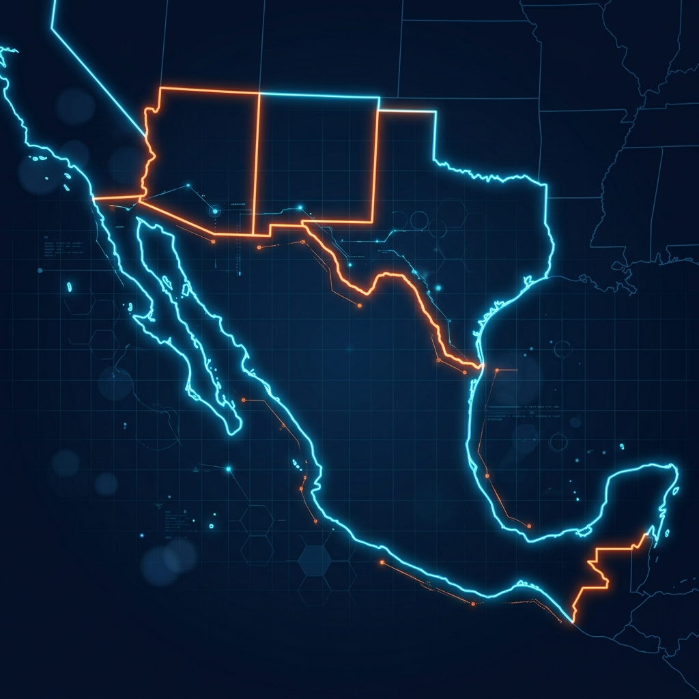

YOUR PROCESSES SHOULDN’T BE SLOW.
THEY SHOULD BE DIGITAL.
Telat transforma cada flujo manual y analógico en un activo de eficiencia automatizado. Eliminamos cuellos de botella de datos mediante inteligencia operativa y blindaje de procesos.
-65%
Costo Operativo
-80%
Tiempo Ciclo
99.6%
Precisión Datos
24/7
Disponibilidad
OUR ACHIEVEMENTS IN DIGITALIZATION
Evolucionamos la infraestructura para una destacada empresa de telecomunicaciones en USA, pasando de llamadas manuales de cobro a un ecosistema integral digital en tablets.
Soporte para líder estadounidense de compra-venta de autos, encargándonos de validar toda la documentación legal y previniendo fraudes transaccionales de alto valor.
Atención a la marca líder de videovigilancia urbana de alta tecnología, encargada de la detección de placas y reconocimiento biométrico en tiempo real.
Gestión y optimización de ventas para campaña masiva de canastas de regalos en picos de demanda crítica (Navidad, Acción de Gracias y Año Nuevo).
Atención y procesamiento de pedidos a medida para e-commerce estadounidense de mercancía personalizada (tazas, playeras, mantas, tarjetas de regalo).
Gestión integral de suministro y despacho de autopartes automotrices para el mayor proveedor en EE.UU. Optimizamos la atención logística de técnicos de principio a fin.
THE SUCCESS STORY OF AI VIRTUALIZATION
Demostramos la eficiencia de nuestro ecosistema híbrido (Humano + Inteligencia Artificial). Logramos una importante reducción de agentes humanos adaptada a cada línea de negocio, automatizando flujos transaccionales y liberando talento para gestiones de alto valor.
Redesign of Installed Capacity
THE BOTTLENECK OF ANALOG BPO
Las empresas líderes siguen operando con procesos híbridos o manuales ineficientes: validación de documentos en papel, ingreso de datos propicio a errores, tiempos muertos en atención telefónica y falta de integraciones tecnológicas que limitan el crecimiento comercial.
Procesos de Entrada Lentos
Escaneo ineficiente de documentos y re-captura manual de información.
Riesgo en Seguridad y Cumplimiento
Falta de trazabilidad e inconsistencias que ponen en riesgo la seguridad financiera.
de los procesos transaccionales y de soporte al cliente siguen operando sin automatización básica, encareciendo la facturación operativa.
END-TO-END BACK-OFFICE PROCESS DIGITALIZATION
Telat Group va más allá de la atención multicanal. Mapeamos, reestructuramos e implementamos tecnología para virtualizar y automatizar por completo flujos operativos y administrativos de Backoffice de principio a fin.
Back-Office Intake
Digitalización y extracción inteligente de datos estructurados para su procesamiento administrativo directo en la nube.
Business Validation
Verificación documental automatizada de contratos, licencias y expedientes con cumplimiento normativo ciego.
Scheduling & Routing
Gestión logística de campo para coordinar recursos, despachar técnicos y rastrear órdenes operativas sin fricción.
Digital Orchestration
Integración transparente entre sistemas legados de Backoffice, CRM y canales de atención con visibilidad 24/7.
TECHNOLOGY APPLIED TO EXPERIENCE
Más de 20 años liderando de forma binacional la evolución de la Experiencia del Cliente e Inteligencia Artificial en México y USA (2005 - 2026).
No somos un contact center tradicional. Somos el brazo operativo y tecnológico que rediseña cómo se comunican las empresas líderes de soporte en el mercado de manera confiable.
Optimización del talento humano gracias a IA y bajó el headcount a 650+
map Operational Hubs Map
Binacional US / MX
HOW DO WE DIGITALIZE YOUR OPERATION?
Analizamos tus flujos manuales actuales de soporte o back-office sin costo, diseñamos un prototipo de automatización con nuestra IA nativa y entregamos un modelo de ahorro y eficiencia operativa garantizado bajo contrato.
Mapeo y Auditoría de Procesos
Desarrollo y Ajuste de Flujos en la Nube
Integración de Ecosistema IA + Equipo Humano
assignment_ind Operational Profiling
Seleccione las opciones que mejor describan su necesidad actual:
Diagnosis Requested!
Hemos recibido tus datos de contacto con éxito. Un especialista de digitalización de Telat Group te enviará un correo en las siguientes 24 horas hábiles.